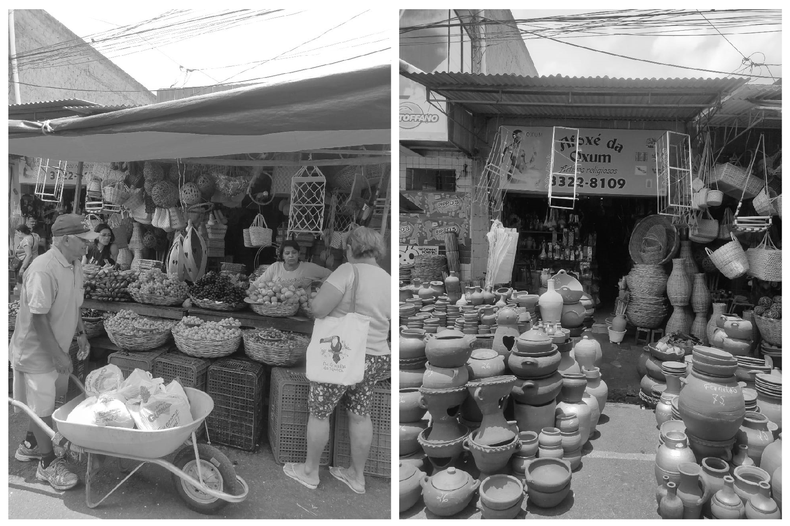

©2017 LabRua
Template: Bootstrapious
+ Kishan B

Andando por Campina Grande
2020-14-05; ocupar, espaço-urbano
A minha experiência em vivenciar Campina Grande e sobre afetos com alguns espaços da cidade.
por Thaís Paixão
A música Passeio no mundo livre, de Chico Science e Nação Zumbi me faz refletir sobre mudanças, cidades e andanças.
“Um passo à frente E você não está mais no mesmo lugar”
Eu só quero andar
Nas ruas de Peixinhos
Andar pelo Brasil
Ou em qualquer cidade
Andando pelo mundo
Sem ter sociedade
Andar com meus amigos, e eletricidade
Andar com as meninas
Sem ser incomodado
Nos últimos quatro anos andei conhecendo Campina Grande-PB. O seu centro histórico e seus edifícios belíssimos em art déco, a relação de seus moradores com a cultura local e o acolhimento das pessoas, foram alguns dos motivos que me fizeram ter certeza de que quero passar mais alguns anos andando e conhecendo a Terra do Maior São João do Mundo. (desculpa Caruaru rs)
Como estudante de arquitetura e urbanismo, o curso me permitiu simular intervenções em vários bairros da cidade, conheci e andei por lugares que geralmente não chegaria em outras situações. A maior recompensa, no fim, é a sensibilidade de olhar o entorno, entendendo o traço da cidade e o modo como as pessoas vivem.

Bairro da Estação Velha por Thaís Paixão, 2017.
A experiência dentro do LabRua: os eventos e as contagens, também me permitiu vivenciar os espaços urbanos. O E aí, Capitólio? me fez conhecer mais sobre um dos mais importantes patrimônios culturais da cidade e entender melhor a opinião das pessoas de como o edifício poderia ser ocupado, já que o mesmo se encontra abandonado.

Cine Capitólio por Thaís Paixão, 2018.
A contagem na feira central me fez me apaixonar mais um pouquinho nesse espaço e, sempre que posso vou lá dar uma voltinha e comprar alguns temperos. O único problema é que ser mulher e andar sozinha por lá traz alguns incômodos, porém me faz lembrar que:
Eu só quero andar, nas ruas do Brasil
Eu só quero andar, em todas as cidades
Eu só quero andar, sem ser incomodado
Andar com as meninas, e eletricidade.
